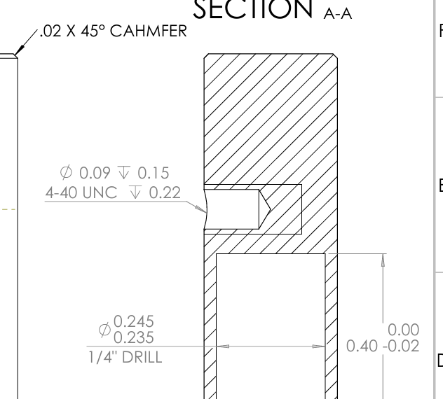
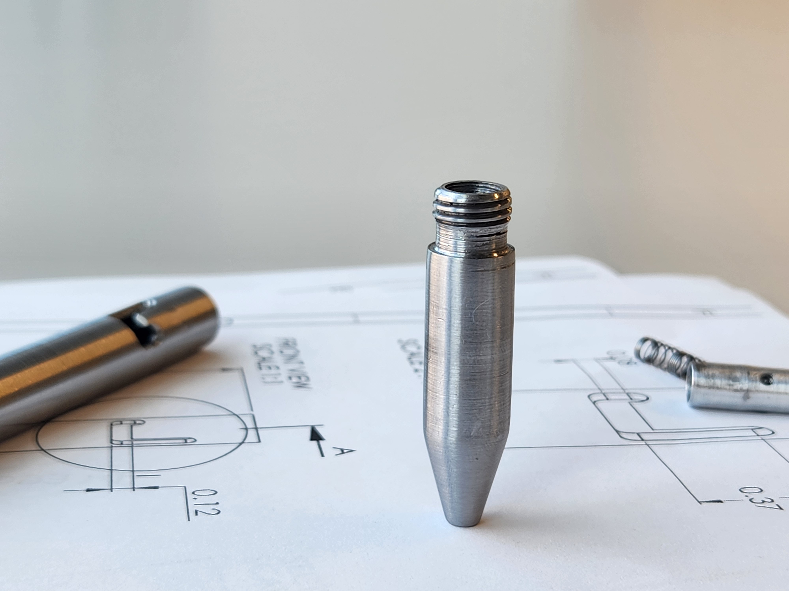
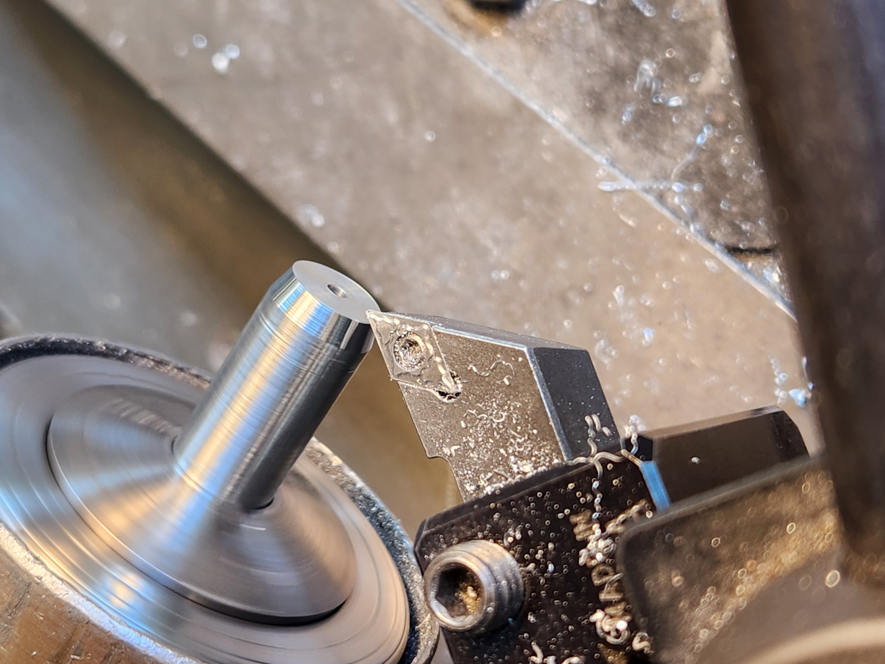
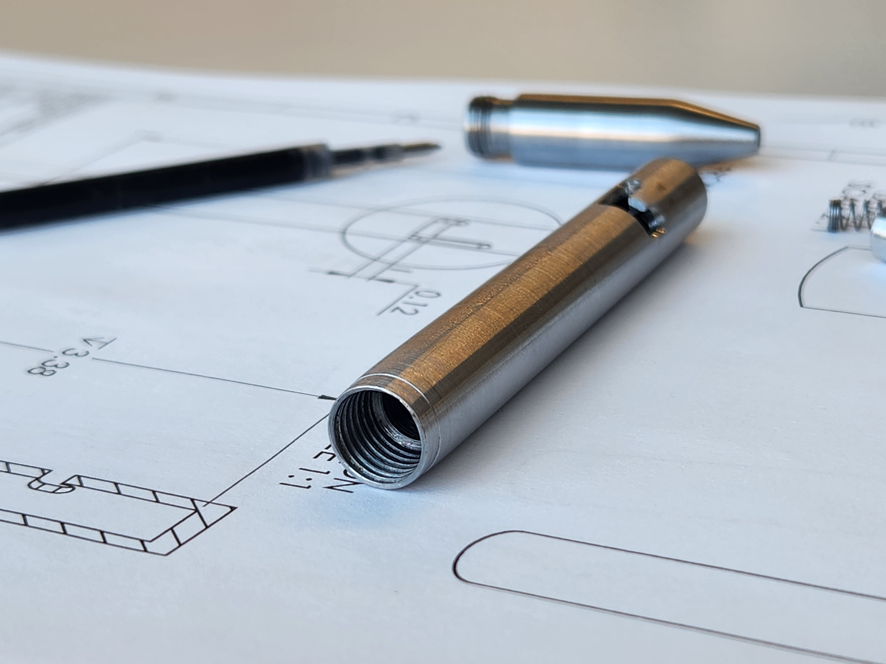
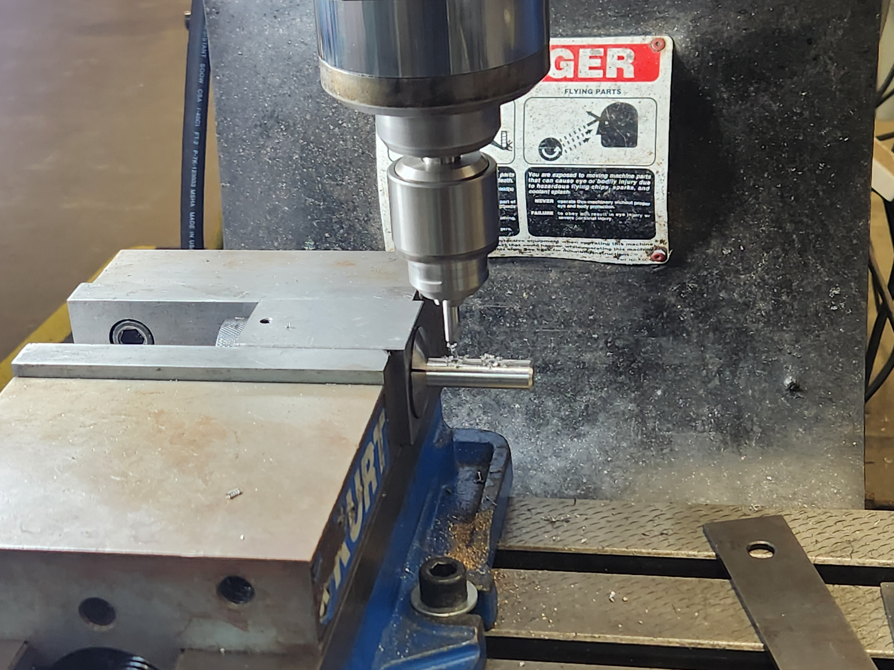
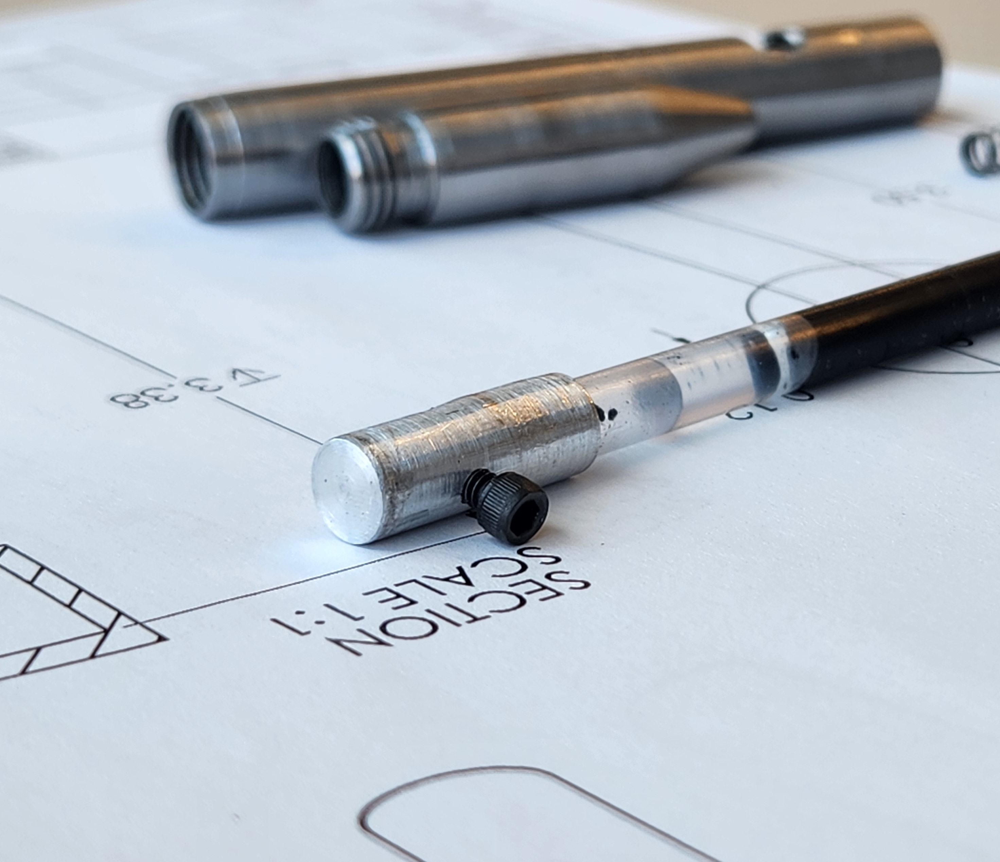
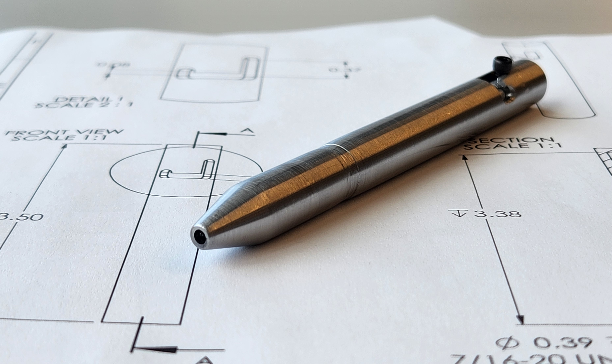
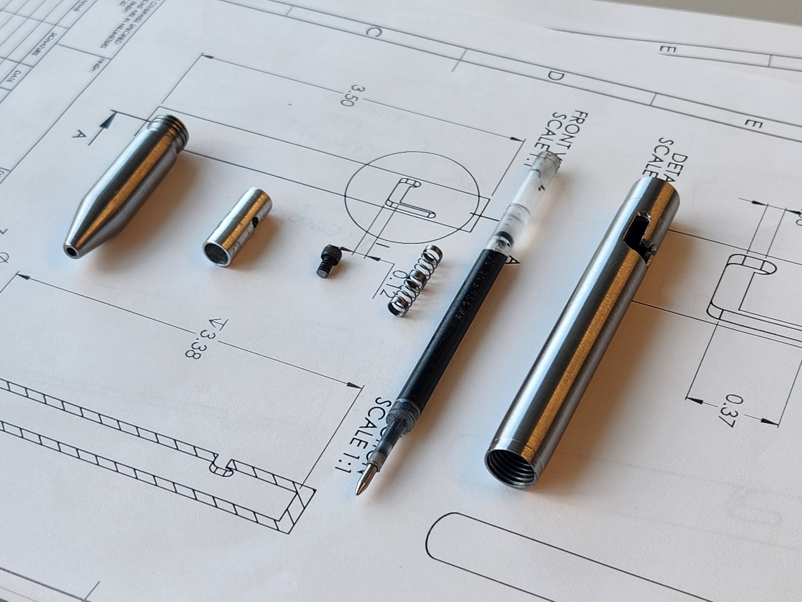
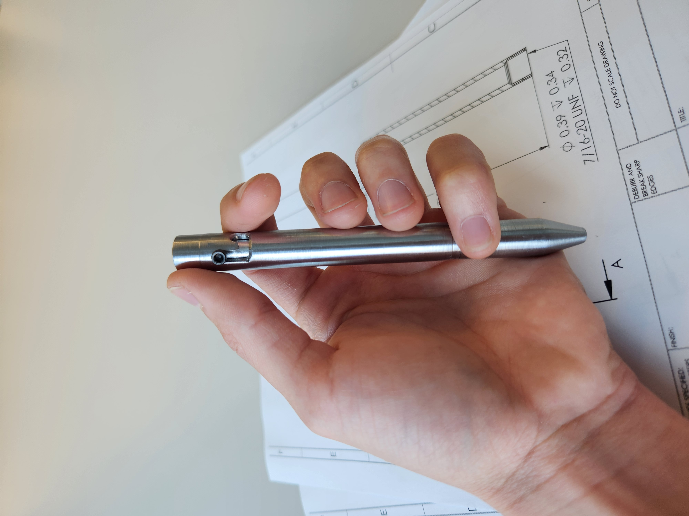

Project Overview
At the end of the school year, I wanted to make a meaningful gift for a graduating friend. Instead of buying a pen, I decided to design and machine a fully custom bolt‑action pen — something durable, personal, and unlike anything you could find commercially.
I began by disassembling my preferred commercial pen, keeping only the ink cartridge and spring. Everything else — the shell, the mechanism, the tolerances — would be designed and machined from scratch.
Design Process
After measuring the ink cartridge and spring in both compressed and extended positions, I modeled the entire pen in SolidWorks. The design consists of three main components:
- Tip / Handle — supports the spring and serves as the grip.
- Top Barrel — encloses the cartridge, houses the internal moving piece, and provides the J‑slot that locks the bolt‑action mechanism.
- Internal Barrel — transmits user force and interfaces with the spring to toggle between open and closed positions.
Materials & Galling Considerations
Material selection was constrained by the stock available in my school’s shop: 303 stainless steel, 6062 aluminum, and occasional copper. Because the design includes a sliding transition fit between the top barrel and internal barrel, I wanted these two components to be made from different materials to reduce the risk of galling.
Close‑fit assembly photo

Initial Approach
My first plan was to machine the internal barrel (piece #3) from steel and the larger components (pieces #1 and #2) from aluminum. The idea was to reserve the harder material for the smallest part, where precision mattered most.
Threading Challenge
Piece #3 includes a small 4‑40 thread — the feature I expected to be most error‑prone. I started machining this part first, but after breaking a carbide tap, I reconsidered the material choices.

Revised Material Strategy
I switched the materials: pieces #1 and #2 would be stainless steel, and piece #3 would be aluminum. This reduced the risk of tap breakage and improved the sliding interface between the internal and outer barrels.
Machining Strategy
I machined the most failure‑prone features first, following the same logic as in the threading step. This helped avoid wasting time on parts that might later fail during critical operations.
Piece #1 — Tip / Handle
- 7/16‑20 UNF machine threads
- 3/32 drilled hole
- Internal bores
- 13° tapered turning


Piece #2 — Top Barrel
- 7/16‑20 UNF tapped threads
- Internal bores
- J‑slot milling



Piece #3 — Internal Barrel
- 4‑40 tapped hole (now in aluminum)
- 1/4 drilled hole

After completing the critical features, all parts were turned down to their final diameters.
Finishing
To achieve a smooth, consistent surface finish, I turned each part to roughly 0.015" above the final diameter using a lubricated, slightly dull insert. Then I used a higher spindle speed and lower feed rate to refine the surface.
Final polishing was done with sequential passes of 120‑grit and 220‑grit sandpaper.
Final Assembly
After adding a couple decorative slots, cleaning and assembling the components, the pen operated smoothly and reliably. The final step was engraving my friend’s initials — a personal touch to finish a fully custom machined gift.


